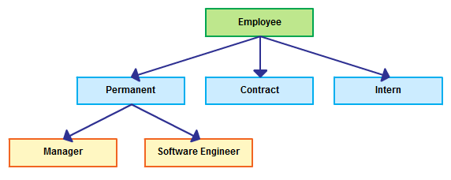
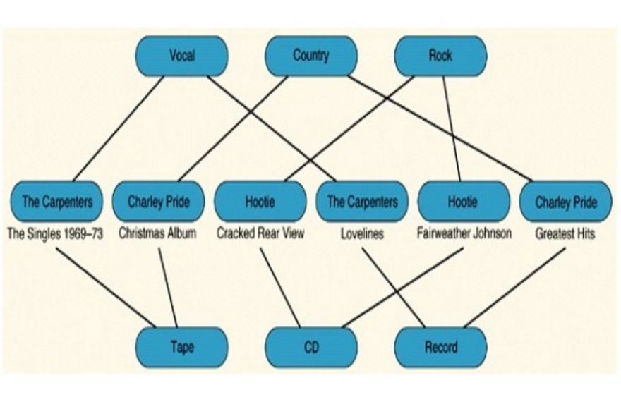
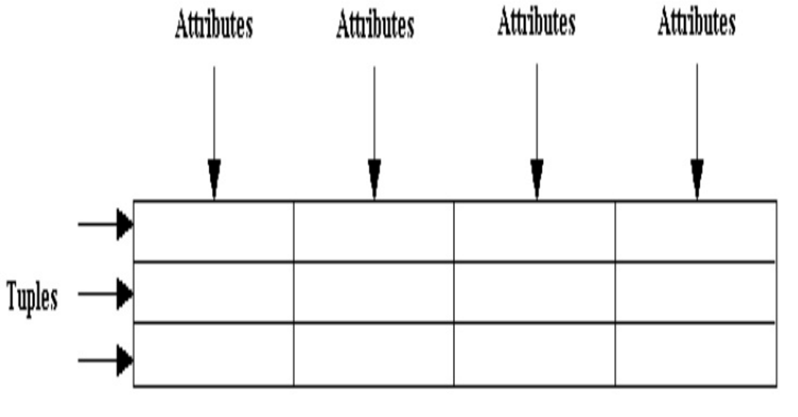
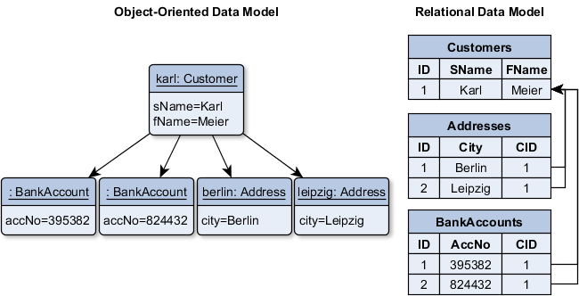
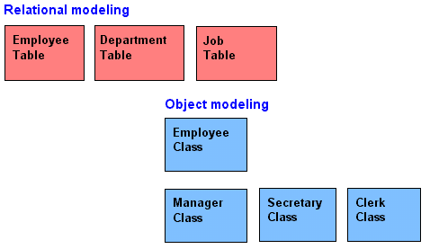
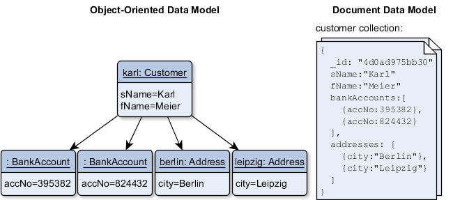
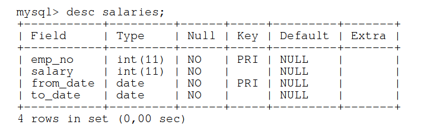
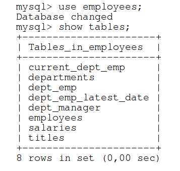

Introduction to DB and SQL
Created for
Iva E. Popova, 2016,

Introduction to DB
- Definition:
- DBDataBase
- A structured set of data, organized to provide efficient retrieval.
- Rationale:
- A DB should be able to serve multiple users (clients) simultaneously.
- A DB should be used for more than one task.
DB Historical Milestones
- Early 1960s - Integrated Data Store (Charles Bachman, General Electric)
- Late 1960s - Information Management System (IBM)
- forms the bases of the hierarchical data model
- In 1970 - Edgar Codd at IBM proposes the relational data model
- In 1980s - the SQL was developed as part of IBM’s System R project.
MySQL Historical Milestones
- 1994 - the MySQL first internal release, created by Michael Widenius and David Axmark
- 1995 - MySQL AB company is founded, by the creators of MySQL DB.
- 2008 - Sun Microsystems acquires MySQL AB for approximately 1 billion dollars.
- 2010 - Oracle Corporation acquires Sun Microsystems and thus - MySQL AB.
DB Evolution.
- Data warehouse
- Logical collection of information gathered from operational databases.
- Supports business analysis activities and decision making tasks.
- Data mart
- Subset of a data warehouse in which only a focused portion of the data warehouse information is kept.
- Ontologies
- Conceptual representation of world that consists of a set of types, properties, and relationship types.
Advantages of a DBMS compared to files system storage
- Data independence
- Efficient data access
- Data integrity and security
- Centralized data administration
- Concurrent access and crash recovery
- Reduced application development time
Data Models
Definition
A data model is a collection of high-level data description constructs that hide many low-level storage details.
Hierarchical database model
Each child have only one parent.
Network database model
A child can have multiple parents.
Relational database model
The central construct is a relation(table), which can be thought of as a set of tuples (rows) which shares common attributes(columns) .
Object-oriented database model
Object-oriented database model
Ease the modelling of complex data structures with many-to-many relationships, by inheritance, data encapsulation
Document database model
Document databases store data in objects that can be deeply nested and can consist of arbitrary fields.
The Relational Model
Definition
- A database is a collection of one or more tables, where each tables is a relation between rows and columns.
- A relation consists of a relation schema and a relation instance.
- Relation instance - a table with rows and columns.
- Relation schema - describes the column heads for the table.
Popular Relationship Database Management System (RDBMS)
- Commercial:
- Oracle, Microsoft SQL Server, SAP SyBase
- Free (under GPL)
- MySQL, PostgreSQL, SQLite
- Relational DataBase
- A collection of tables, with related data.
- Tables - represents a Relation.
- Table and relations are synonymous in DB context.
- A relation is different from relationship.
- A table consists of rows and columns, like a simple spreadsheet.
- Each table is a set of unique rows.
- Row (Tuple, Record)
- Represents a collection of related values (characteristic) of an entity.
- Column (field)
- One column contains data of one and the same type, as defined in schema.
Key Concepts
Tables Relationships
- One to one relationship
- Example: Customer -> Address
- One to Many/Many to One relationship
- Example: Customer -> Orders
- Many to Many relationship
- Examples: Orders -> Items
- Self Referencing relationship
- Customer -> Customer (like in referral program)
Example Table
ExampleDatabase
ExampleDatabase
- Download
- Employees Sample Database
- Install (CLI)
- Install (MySQL Workbench)
- File => Run SQL Script... => Navigate and select 'employees.sql'
- Leave empty field for 'Default Schema Name' and 'Default Character Set'
- Press 'Run' and wait the script to executes and load all data.
- Refresh the 'SCHEMAS' panel.
mysql -u root -p < employees.sql
SQL Introduction
What is SQL?
- SQLStructuredQueryLanguage
- The standard language for relational database management systems.
- Not a procedural language(C, Java etc.).
- A declarative language!
- Tell with SQL what you want instead of telling the system how to get it.
- Case insensitive!
SQL statements
- A set of commands you use to query or manipulate the DB.
- Some RDBMS require a semicolon at the end of each SQL statement.
Example SQL commands
SELECT, UPDATE, DELETE
INSERT INTO, CREATE DATABASE, ALTER DATABASE
CREATE TABLE, ALTER TABLE, DROP TABLE
CREATE INDEX, DROP INDEX